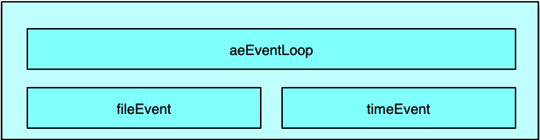
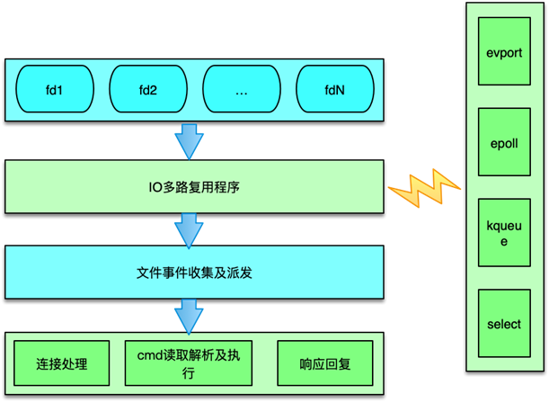
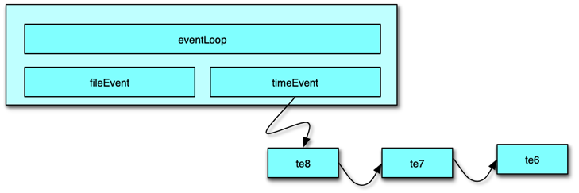

- 00 开篇寄语：缓存，你真的用对了吗？.md
- 01 业务数据访问性能太低怎么办？.md
- 02 如何根据业务来选择缓存模式和组件？.md
- 03 设计缓存架构时需要考量哪些因素？.md
- 04 缓存失效、穿透和雪崩问题怎么处理？.md
- 05 缓存数据不一致和并发竞争怎么处理？.md
- 06 Hot Key和Big Key引发的问题怎么应对？.md
- 07 MC为何是应用最广泛的缓存组件？.md
- 08 MC系统架构是如何布局的？.md
- 09 MC是如何使用多线程和状态机来处理请求命令的？.md
- 10 MC是怎么定位key的.md
- 11 MC如何淘汰冷key和失效key.md
- 12 为何MC能长期维持高性能读写？.md
- 13 如何完整学习MC协议及优化client访问？.md
- 14 大数据时代，MC如何应对新的常见问题？.md
- 15 如何深入理解、应用及扩展 Twemproxy？.md
- 16 常用的缓存组件Redis是如何运行的？.md
- 17 如何理解、选择并使用Redis的核心数据类型？.md
- 18 Redis协议的请求和响应有哪些“套路”可循？.md
- 19 Redis系统架构中各个处理模块是干什么的？.md
- 20 Redis如何处理文件事件和时间事件？.md
- 21 Redis读取请求数据后，如何进行协议解析和处理.md
- 22 怎么认识和应用Redis内部数据结构？.md
- 23 Redis是如何淘汰key的？.md
- 24 Redis崩溃后，如何进行数据恢复的？.md
- 25 Redis是如何处理容易超时的系统调用的？.md
- 26 如何大幅成倍提升Redis处理性能？.md
- 27 Redis是如何进行主从复制的？.md
- 28 如何构建一个高性能、易扩展的Redis集群？.md
- 29 从容应对亿级QPS访问，Redis还缺少什么？.md
- 30 面对海量数据，为什么无法设计出完美的分布式缓存体系？.md
- 31 如何设计足够可靠的分布式缓存体系，以满足大中型移动互联网系统的需要？.md
- 32 一个典型的分布式缓存系统是什么样的？.md
- 33 如何为秒杀系统设计缓存体系？.md
- 34 如何为海量计数场景设计缓存体系？.md
- 35 如何为社交feed场景设计缓存体系？.md
20 Redis如何处理文件事件和时间事件？
上一课时，我们学习了 Redis 的系统架构，接下来的几个课时我将带你一起对这些模块和设计进行详细分析。首先，我将分析 Redis 的事件驱动模型。
Redis 事件驱动模型
事件驱动模型
Redis 是一个事件驱动程序，但和 Memcached 不同的是，Redis 并没有采用 libevent 或 libev 这些开源库，而是直接开发了一个新的事件循环组件。Redis 作者给出的理由是，尽量减少外部依赖，而自己开发的事件模型也足够简洁、轻便、高效，也更易控制。Redis 的事件驱动模型机制封装在 aeEventLoop 等相关的结构体中，网络连接、命令读取执行回复，数据的持久化、淘汰回收 key 等，几乎所有的核心操作都通过 ae 事件模型进行处理。

Redis 的事件驱动模型处理 2 类事件：
- 文件事件，如连接建立、接受请求命令、发送响应等；
- 时间事件，如 Redis 中定期要执行的统计、key 淘汰、缓冲数据写出、rehash等。
文件事件处理

Redis 的文件事件采用典型的 Reactor 模式进行处理。Redis 文件事件处理机制分为 4 部分：
- 连接 socket
- IO 多路复用程序
- 文件事件分派器
- 事件处理器
文件事件是对连接 socket 操作的一个抽象。当端口监听 socket 准备 accept 新连接，或者连接 socket 准备好读取请求、写入响应、关闭时，就会产生一个文件事件。IO 多路复用程序负责同时监听多个 socket，当这些 socket 产生文件事件时，就会触发事件通知，文件分派器就会感知并获取到这些事件。
虽然多个文件事件可能会并发出现，但 IO 多路复用程序总会将所有产生事件的 socket 放入一个队列中，通过这个队列，有序的把这些文件事件通知给文件分派器。
IO多路复用
Redis 封装了 4 种多路复用程序，每种封装实现都提供了相同的 API 实现。编译时，会按照性能和系统平台，选择最佳的 IO 多路复用函数作为底层实现，选择顺序是，首先尝试选择 Solaries 中的 evport，如果没有，就尝试选择 Linux 中的 epoll，否则就选择大多 UNIX 系统都支持的 kqueue，这 3 个多路复用函数都直接使用系统内核内部的结构，可以服务数十万的文件描述符。
如果当前编译环境没有上述函数，就会选择 select 作为底层实现方案。select 方案的性能较差，事件发生时，会扫描全部监听的描述符，事件复杂度是 O(n)，并且只能同时服务有限个文件描述符，32 位机默认是 1024 个，64 位机默认是 2048 个，所以一般情况下，并不会选择 select 作为线上运行方案。Redis 的这 4 种实现，分别在 ae_evport、ae_epoll、ae_kqueue 和 ae_select 这 4 个代码文件中。
文件事件收集及派发器
Redis 中的文件事件分派器是 aeProcessEvents 函数。它会首先计算最大可以等待的时间，然后利用 aeApiPoll 等待文件事件的发生。如果在等待时间内，一旦 IO 多路复用程序产生了事件通知，则会立即轮询所有已产生的文件事件，并将文件事件放入 aeEventLoop 中的 aeFiredEvents 结构数组中。每个 fired event 会记录 socket 及 Redis 读写事件类型。
这里会涉及将多路复用中的事件类型，转换为 Redis 的 ae 事件驱动模型中的事件类型。以采用 Linux 中的 epoll 为例，会将 epoll 中的 EPOLLIN 转为 AE_READABLE 类型，将 epoll 中的 EPOLLOUT、EPOLLERR 和 EPOLLHUP 转为 AE_WRITABLE 事件。
aeProcessEvents 在获取到触发的事件后，会根据事件类型，将文件事件 dispatch 派发给对应事件处理函数。如果同一个 socket，同时有读事件和写事件，Redis 派发器会首先派发处理读事件，然后再派发处理写事件。
文件事件处理函数分类
Redis 中文件事件函数的注册和处理主要分为 3 种。
- 连接处理函数 acceptTcpHandler
Redis 在启动时，在 initServer 中对监听的 socket 注册读事件，事件处理器为 acceptTcpHandler，该函数在有新连接进入时，会被派发器派发读任务。在处理该读任务时，会 accept 新连接，获取调用方的 IP 及端口，并对新连接创建一个 client 结构。如果同时有大量连接同时进入，Redis 一次最多处理 1000 个连接请求。
- readQueryFromClient 请求处理函数
连接函数在创建 client 时，会对新连接 socket 注册一个读事件，该读事件的事件处理器就是 readQueryFromClient。在连接 socket 有请求命令到达时，IO 多路复用程序会获取并触发文件事件，然后这个读事件被派发器派发给本请求的处理函数。readQueryFromClient 会从连接 socket 读取数据，存入 client 的 query 缓冲，然后进行解析命令，按照 Redis 当前支持的 2 种请求格式，及 inline 内联格式和 multibulk 字符块数组格式进行尝试解析。解析完毕后，client 会根据请求命令从命令表中获取到对应的 redisCommand，如果对应 cmd 存在。则开始校验请求的参数，以及当前 server 的内存、磁盘及其他状态，完成校验后，然后真正开始执行 redisCommand 的处理函数，进行具体命令的执行，最后将执行结果作为响应写入 client 的写缓冲中。
- 命令回复处理器 sendReplyToClient
当 redis需要发送响应给client时，Redis 事件循环中会对client的连接socket注册写事件，这个写事件的处理函数就是sendReplyToClient。通过注册写事件，将 client 的socket与 AE_WRITABLE 进行间接关联。当 Client fd 可进行写操作时，就会触发写事件，该函数就会将写缓冲中的数据发送给调用方。

Redis 中的时间事件是指需要在特定时间执行的事件。多个 Redis 中的时间事件构成 aeEventLoop 中的一个链表，供 Redis 在 ae 事件循环中轮询执行。
Redis 当前的主要时间事件处理函数有 2 个：
- serverCron
- moduleTimerHandler
Redis 中的时间事件分为 2 类：
- 单次时间，即执行完毕后，该时间事件就结束了。
- 周期性事件，在事件执行完毕后，会继续设置下一次执行的事件，从而在时间到达后继续执行，并不断重复。
时间事件主要有 5 个属性组成。
- 事件 ID：Redis 为时间事件创建全局唯一 ID，该 ID 按从小到大的顺序进行递增。
- 执行时间 when_sec 和 when_ms：精确到毫秒，记录该事件的到达可执行时间。
- 时间事件处理器 timeProc：在时间事件到达时，Redis 会调用相应的 timeProc 处理事件。
- 关联数据 clientData：在调用 timeProc 时，需要使用该关联数据作为参数。
- 链表指针 prev 和 next：它用来将时间事件维护为双向链表，便于插入及查找所要执行的时间事件。
时间事件的处理是在事件循环中的 aeProcessEvents 中进行。执行过程是：
- 首先遍历所有的时间事件。
- 比较事件的时间和当前时间，找出可执行的时间事件。
- 然后执行时间事件的 timeProc 函数。
- 执行完毕后，对于周期性时间，设置时间新的执行时间；对于单次性时间，设置事件的 ID为 -1，后续在事件循环中，下一次执行 aeProcessEvents 的时候从链表中删除。
© 2019 - 2023 Liangliang Lee. Powered by gin and hexo-theme-book.